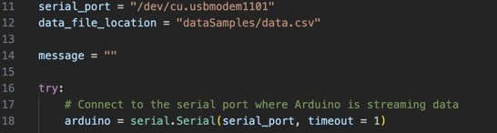

Stress Detector - Project Report
This is a Leaving Cert project focused on using technology to help improve the well-being of the user. I have made a project that tracks the users stress levels. I did this by using galvanic skin response sensors.
Create
| Week | Progress Log |
|---|---|
| Week 1 | Brain storming ideas and choosing which one I will focus on. |
| Week 2 | Learning the language C++ |
| Week 3 | Implementing what I learned in C++ to code my arduino. Trying to find information about my GSR sensor. |
| Week 4 | Learning how to transfer data from arduino to python. Coding python to print out needed outputs using collected data from arduino. |
| Week 5 + 6 | Creating Website, HTML code, recording video, filling in the report. |
Unit Test
I am using this unit test to check if the graphing is working properly. We are using pre-collected data as the changing data set is tested in a different unit test. This is very important as the graph is the main output of my project. If it were to not work, it would be very damaging to the overall outcome for the project. The way I achieved using this code as a unit test is because with this I am able to upload a csv dile that I already know the contents of. This means that when I run the code I already have a graph made to compare this outcome to. The graph was easy to make outside the code as the csv file can be uploaded to pre-existing webs and is also not too hard to create by hand.
- In the line 3 and 4 we import necessary libraries
- Line 7 is very important, it will take in the csv file that we already know how the graph looks, and we use it to test the code, this unit test will be checking if the graphs are created accurately and how they should look before we start adding the sounds, colour changes, and ongoing movement of the graph.
- Lines 16 and 17 we divide the data we collect from the csv file. This allows us to choose what data we show in the x-axis and y-axis.
- Line 19 is the code making the plot line, we are saying its green and solid. We don't have the colour changing aspect in this unit test yet.
- Lines 20 to 22 is all about labeling the graph.
Problem and Solution
There was many small problems that I encountered through the process of creating the coding for the project.
Along with other problems too, such as getting the GSR sensor as the shipping time was months.
A problem that I encountered while creating my project which I will talk about here was when I reached the point
where I had to create a code to transfer data from the Arduino to python.
All the information online was outdated or just did not work in general.
It was very difficult to find anything that would be helpful, but I noticed a lot of people were using serial
library to import information.
After reading a lot of websites and watching a few tutorials I came to the conclusion that none of them were going
to help me, as none were working, and decided to take a different approach.
Using the official documentation, I learnt how to use the import serial and eventually using trial and error I
figured out how to get it working.
An important piece of code

This piece of code is important to the project as it is in charge of taking the data being collected from the
arduino, storing the data into a csv file and then into the computer.
This then allows python to read that data and act on it making the graph and all other outputs.
- Line 11 sets what serial port the computer is taking the information through. This would change for each computer.
- Line 12 tell the program where to store the data.
- Line 14 is a variable that is later used in the code for printing out a message.
- Line 16, try lets you be able to handle errors that may occur.
- Line 18 is what actually tells the program to read the serial port and take in the data from the arduino.
Creating the Graph
I had to play around with the coding for the graphs as it was my first time using them.
After learning how to code for the graph to print out the values inside the csv file this was the first outcome.
It was extremely hard to read so my next step was to change its design.
To make more graphs, I carried out some more tests to collect more data.
I was wearing the sensors to try to get some new data sets when my dad made me laugh.
This was the first data were you could clearly see a big change in stress levels.
It showed that laughing made me relax a lot, which makes sense if you think about the saying "laughter is the best
medicine".
I also changed the look of the graph which made it so much easier to read, this helped me decide that I was going to
use solid lines in the graph.
Later on I added the colour change, sound warning, and actively moving line to the output graph.